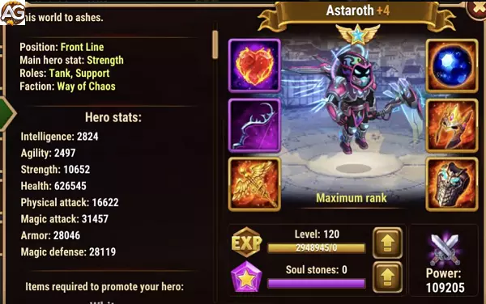

How to get Soul Stones: Events, Heroic Chest, Campaign
Tier List 2024
Hero Tier List: S
Hydra Tier List: A+
Last updated on: 03/29/2024
Author: Alexandre Domingos
Strategy on How to Use Astaroth in Hero Wars Alliance
Astaroth is an iconic character in Hero Wars Alliance, known for his robustness as a tank and ability to sustain teams in prolonged battles. In this article, we will explore effective strategies to maximize Astaroth's potential in various gaming situations, from early to advanced stages, highlighting his usefulness against Hydras, his unique resurrection, and his key role in forming competitive teams in the Royal league.
1. Introduction to Astaroth: A Versatile Tank
Astaroth is more than just a conventional tank; he is a reliable shield for teams in Hero Wars Alliance. His endurance is unmatched, and his ability to absorb damage makes him indispensable in various gaming situations. From the beginning, Astaroth may not seem impressive in terms of damage, but his true strength lies in his ability to protect his allies and stand firm against enemy attacks.
2. Astaroth against Hydras: A Formidable Defense
One area where Astaroth shines is against the formidable Hydras. With his high tank power and resilience, he becomes an ideal choice to face these monsters. Especially for beginner players in the Early Game to the early End-game, Astaroth can be a vital anchor in their teams. His ability to absorb physical damage and protect weaker allied heroes is invaluable in these battles. Even in the End-game, although there may be other more specialized options, dismissing Astaroth from Hydras will require a lot of time and investment in the game, making him a solid choice in many scenarios.
3. Astaroth as the Best Tank: Dominance in Towers and Campaigns
In addition to his performance against Hydras, Astaroth excels as the best tank for various other situations. His resurrection ability is a significant advantage in towers and campaigns, where survival is essential. By using Astaroth in these areas, players can ensure additional endurance and the ability to recover from challenging encounters. Whether facing hordes of enemies in campaigns or defending towers against invasions, Astaroth is a reliable choice.
4. Astaroth's Evolution: From Early to Advanced
Astaroth's potential is not immediately evident at the beginning of the game. He may seem weak in terms of damage and abilities, but with proper investment and development, he becomes a pillar of victorious teams. Players should focus on strengthening his defensive abilities and increasing his resilience to unlock Astaroth's full potential. As they progress in the game, his resurrection abilities become even more valuable, especially in prolonged battles where endurance is crucial.
5. Astaroth in the Royal League: Forming Victorious Teams
Even with the introduction of new heroes and tanks in Hero Wars Alliance, Astaroth maintains his place among the strongest. His versatility and ability to sustain teams make him a popular choice in the Royal league, where competition is fierce. When assembling teams to face challenges in this arena, Astaroth often takes on the role of the main tank, offering essential protection to his allies and helping to ensure victory.
6. Ideal Team Building with Astaroth: Synergy and Complement
To maximize Astaroth's potential, it is crucial to build teams that leverage his tanking and resurrection ability. Here are some suggestions for forming an effective team around him:
High Impact DPS: Astaroth is a solid tank, but he needs allies who can inflict significant damage to enemies. Choose high-damage heroes like K'arkh, Keira, or Jhu to maximize your team's potential.
Healing and Buff Support: While Astaroth is resilient, he still needs support to keep his team alive. Include heroes like Martha, Celeste, or Thea to provide healing and buffs that increase the team's durability.
Crowd Control: Heroes who can control the battlefield are valuable alongside Astaroth. Add characters like Nebula, Krista, or Cornelius to disrupt enemy attacks and maintain control of the situation.
Other Tanks or Support Heroes: Depending on the situation, it may be beneficial to include another resilient tank alongside Astaroth to split the damage and increase the team's survival. Alternatively, support heroes like Faceless or Dorian can offer unique synergy with Astaroth, enhancing his effectiveness.
7. Advanced Strategies with Astaroth: Maximizing his Unique Ability
In addition to his basic abilities, Astaroth has a unique resurrection ability that can change the course of a battle. To maximize the potential of this ability, consider the following advanced strategies:
Activation Timing: Knowing the right time to activate Astaroth's resurrection ability is crucial. Wait until your most important allies are defeated before triggering the ability, ensuring that they return to battle when they are most needed.
Energy Management: Make sure Astaroth has enough energy to activate his resurrection ability when needed. This may involve strategically using heroes that increase energy generation or conserving abilities for critical moments.
Tactical Positioning: Place Astaroth in a central position in the team formation to ensure that he can protect all allies equally. This also facilitates the quick activation of his resurrection ability when needed.
Astaroth's Talisman
With Talisman Astaroth will receive an additional, 80000 points of health and 12000 points of magic defense, leveling the defense with most of the magic penetrations in the game.
So, with more magic defense and health, Astaroth can defend his team against any mage that doesn't have magic penetration, making him strong against mage teams.
Attributes of the Talisman of Redemption
Slot
Statistics
Max Points
0
Strength
+2000
1
Magical Defense
+6000
2
Magical Defense
+6000
3
Magical Defense
+6000
Positive and Negative Points
Positive Points
Physical shield for all allies
Burns some of the enemy's energy from the bottom line
Absorbs part of the physical damage from the ally with the lowest health
Resurrect
Negative Points
Resurrect does not work against Morrigan
Resurrect does not work if morrigan is allied
The shield protects only physical damage and is not a strong shield
Evolution Priorities Guide for Astaroth in Hero Wars Alliance
As a tank hero in Hero Wars Alliance, Astaroth's evolution priorities are crucial for optimizing his performance on the battlefield. By strategically allocating resources such as glyphs, artifacts, and skins, players can enhance Astaroth's defensive capabilities and overall effectiveness. In this guide, we'll provide comprehensive tips on how to prioritize Astaroth's evolution, ensuring players can make informed decisions to maximize his potential.
Glyphs:
Glyphs play a pivotal role in enhancing Astaroth's stats, making it imperative to prioritize them wisely. As a tank, Astaroth's primary focus should be on survivability. Therefore, prioritize glyphs that bolster his armor and health, as these attributes directly contribute to his ability to absorb damage and sustain himself in combat. Next, prioritize magic defense to mitigate incoming magical attacks, followed by strength to improve overall durability, and lastly magical attack for added offensive potential.
Glyphs
Priority Order
Armor
Highest Priority
Health
High Priority
Magic Defense
Moderate Priority
Strength
Low Priority
Magical Attack
Lowest Priority
Artifacts:
Astaroth's artifacts significantly influence his combat prowess, making it essential to invest in them wisely. When prioritizing artifacts, focus on enhancing Astaroth's defensive capabilities first. Start by upgrading the book artifact to increase armor and magic defense, reinforcing Astaroth's resilience against physical and magical attacks. Next, prioritize the ring artifact to boost Astaroth's health pool, further augmenting his survivability in prolonged battles. Lastly, invest in the weapon artifact, prioritizing bonuses that provide additional armor, thereby solidifying Astaroth's role as a frontline tank.
Artifacts
Priority Order
Book
Highest Priority
Ring
High Priority
Weapon
Moderate Priority
Visuals:
Visuals not only enhance Astaroth's appearance but also contribute to his combat performance. When selecting skins, prioritize those that reinforce Astaroth's defensive capabilities. Begin by prioritizing armor and life skin+ skins to increase Astaroth's resistance to enemy attacks, ensuring he can withstand prolonged engagements. Following this, invest in skins that bolster health to further increase Astaroth's survivability. Additionally, prioritize skins that enhance magic defense, strength, and magical attack, providing additional utility and offensive potential in combat.
Visuals
Priority Order
Armor
Highest Priority
Life Skin+
High Priority
Health
Moderate Priority
Magic Defense
Low Priority
Strength
Lowest Priority
Magical Attack
Lowest Priority
Mastering Astaroth's Evolution: Ensuring Victory on the Battlefield
Prioritizing Astaroth's evolution is essential for maximizing his effectiveness as a tank hero in Hero Wars Alliance. By focusing on glyphs, artifacts, and skins that enhance his defensive capabilities, players can ensure that Astaroth remains a formidable force on the battlefield, capable of withstanding enemy assaults and leading his team to victory. With these evolution priorities in mind, players can make informed decisions to optimize Astaroth's performance and dominate the competition in Hero Wars Alliance.
Astaroth vs Hydras
Astaroth is a good Tank against Hydras and can help your weaker allied heroes against physical damage Hydras, mainly for early-game players up to end-game beginners. In the end-game, Astaroth is little used against Hydras, but until you dismiss your Hydra Astaroth it will take a lot of time and investment in the game.
Astaroth Team for Hydra: Martha, Mojo, Nebula, Jhu, Astaroth
Astaroth in Battles
Strong Against
Keira - Daredevil - Ginger - Satori
Counters
Morrigan - Celeste
Astaroth Best Teams
Aidan, Sebastian, Yasmine, Tristan, Astaroth
Lilith, Aidan, Xe'sha, Kayla, Astaroth
Lilith, Aidan, Xe'sha, Kayla, Astaroth
Fafnir, Artemis, Tristan, Astaroth, Julius
Martha, Faceless, Jorgen, K'arkh, Astaroth
Martha, Faceless, Jorgen, K'arkh, Astaroth
Jet, Sebastian, Keira, Andvari, Astaroth
Faceless, Jorgen, Nebula, K'arkh, Astaroth
Martha, Faceless, Nebula, K'arkh, Astaroth
Martha, Lars, Jorgen, Krista, Astaroth
Faceless, Jorgen, Celeste, Satori, Astaroth
Martha, Jorgen, Celeste, Satori, Astaroth
Faceless, Amira, Celeste, Satori, Astaroth
Martha, Amira, Celeste, Satori, Astaroth
Martha, Lars, Jorgen, Krista, Astaroth
Martha, Lars, Nebula, Krista, Astaroth
Dorian, Lars, Celeste, Krista, Astaroth

Astaroth with cybernetic skin, Hero Wars.
Max level Skills
1st Veil of Flames
Astaroth creates a shield for all allies, the shield only blocks physical damage.
Astaroth throws the flame of hell and burns part of the energy acquired by the enemy in the back row.
Energy Burned: Maximum (37%) Skill Formula (10% * Skill Level + 25)
3rd Demon Loyalty
{Passive Skill}. Astaroth gains the power to connect to the ally with the lowest health and now receives a portion of the damage taken by this ally. Damage transferred to Astaroth is also reduced as shown in the skill's formula.


 Keira
Keira Sebastian
Sebastian